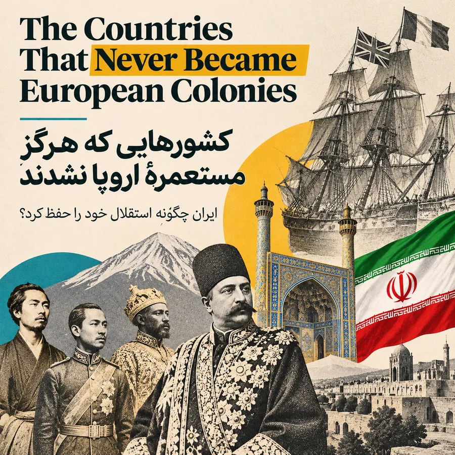
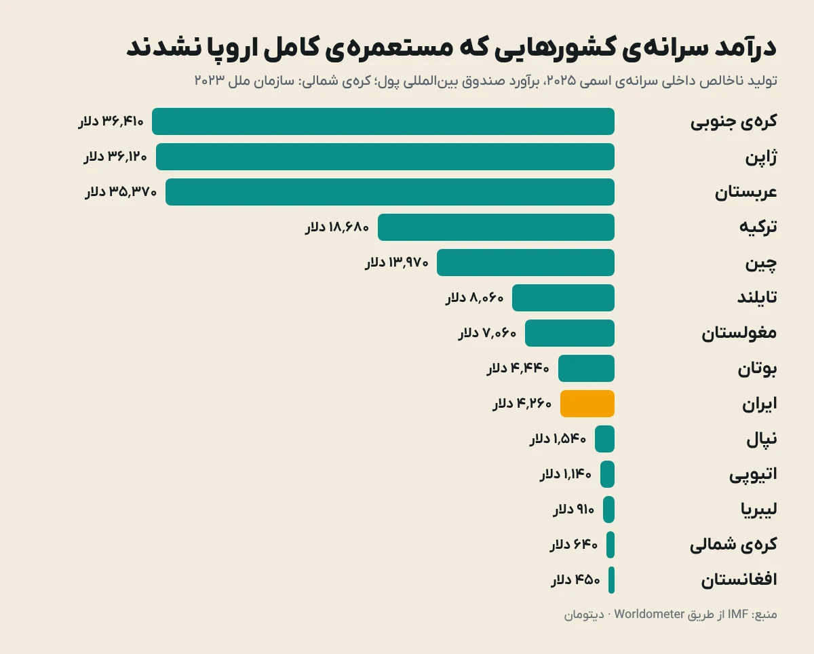

کشورهایی که مستعمره نشدند، و بهایی که ایران برای استقلال داد
The countries Europe never colonised, and the price Iran paid
چرا ایران مستعمره نشد، امتیازها و اشغالها چه هزینهای داشتند، امیرکبیر و میجی چه فرقی داشتند و امروز این کشورها کجا هستند
Why Iran was never colonised, what the concessions and occupations cost, how Amir Kabir and Meiji differed, and where these countries stand today
در دورانی که امپراتوریهای اروپایی بخش بزرگی از جهان را زیر کنترل گرفتند، چند کشور معدود استقلال رسمی خود را نگه داشتند و ایران یکی از آنها بود. نقشهای تازه از صفحهی The World in Maps این داستان را دوباره سر زبانها انداخته است. این گزارش میگوید این کشورها چطور ماندند، ایران چه بهایی برای استقلالش داد، و چرا امروز سرنوشت اقتصادیشان اینقدر متفاوت است.
در یک نگاه
- در ۱۹۴۵ حدود ۷۵۰ میلیون نفر، نزدیک به یکسوم جمعیت جهان، در سرزمینهای وابسته به قدرتهای استعماری زندگی میکردند
- نقشه ۱۳ کشور امروزی را نشان میدهد که از استعمار کامل اروپایی دور ماندند، بهاضافهی اتیوپی که حالت خاصی دارد
- «مستعمره نشدن» با «هرگز اشغال نشدن» یکی نیست: ایران سرزمین از دست داد، امتیاز داد و در دو جنگ جهانی اشغال شد، ولی هرگز مستعمرهی کامل یک قدرت اروپایی نشد
- ایران ۱۷ سال پیش از ژاپن اصلاحات مدرن را با امیرکبیر شروع کرد؛ ولی آن اصلاحات بعد از حدود سه سال متوقف شد
- امروز درآمد سرانهی این کشورها از حدود ۴۵۰ دلار تا بیش از ۳۶ هزار دلار فرق دارد؛ استقلال سیاسی بهتنهایی رفاه نمیآورد
1. استعمار در جهان چه ابعادی داشت؟
طبق سازمان ملل، وقتی این سازمان در ۱۹۴۵ تأسیس شد، حدود ۷۵۰ میلیون نفر، نزدیک به یکسوم جمعیت جهان، در سرزمینهای وابسته زندگی میکردند. از آن زمان بیش از ۸۰ مستعمرهی سابق مستقل شدهاند و هنوز ۱۷ «سرزمین غیرخودگردان» در فهرست سازمان ملل باقی است (سازمان ملل). بسیاری از کشورهای آمریکای لاتین بیش از یک قرن پیش از ۱۹۴۵ مستقل شده بودند.
اثر استعمار هنوز در اقتصاد دیده میشود. جایزهی نوبل اقتصاد ۲۰۲۴ به دارون عجماوغلو، سایمون جانسون و جیمز رابینسون رسید؛ برای پژوهشی که نشان داد مستعمرههایی که در زمان ورود اروپاییها نسبتاً ثروتمند بودند، امروز اغلب جزو فقیرترینها هستند. آنها این را «وارونگی بخت» نامیدند و دلیلش را نهادها دانستند: جایی که استعمارگران نهادهای «استخراجی» ساختند تا منابع و مردم را بهرهکشی کنند، رشد بلندمدت آسیب دید. به گفتهی خود آنها: «نهادهایی که برای بهرهکشی از تودهها ساخته شدند، برای رشد بلندمدت بدند» (بنیاد نوبل). این وارونگی در بخشهایی از جهان که مستعمره نشدند دیده نمیشود.
2. کدام کشورها مستعمرهی کامل اروپا نشدند؟
نقشهی The World in Maps فقط استعمار اروپایی را معیار گرفته است. تجربهی این کشورها یکسان نبود:
| کشور | وضعیت تاریخی | لحظهی کلیدی |
|---|---|---|
| 🇮🇷 ایران | استقلال رسمی، با نفوذ، امتیازدهی و اشغال خارجی | قرارداد ۱۹۰۷ روس و انگلیس |
| 🇯🇵 ژاپن | صنعتی شدن سریع؛ بعدها خودش قدرت استعماری شد | اصلاحات میجی، ۱۸۶۸ |
| 🇹🇭 تایلند | دیپلماسی و استفاده از رقابت بریتانیا و فرانسه | اعلامیهی بریتانیا و فرانسه، ۱۸۹۶ |
| 🇨🇳 چین | حکومت مستقل، ولی بندرها و سرزمینهایی زیر کنترل خارجی | جنگهای تریاک، ۱۸۳۹ تا ۱۸۶۰ |
| 🇹🇷 ترکیه | بازماندهی عثمانی؛ جمهوری پس از جنگ استقلال | پیمان لوزان، ۱۹۲۳ |
| 🇦🇫 افغانستان | مقاومت نظامی، میان دو امپراتوری رقیب | استقلال کامل سیاست خارجی، ۱۹۱۹ |
| 🇸🇦 عربستان | بیشتر سرزمین هرگز مستعمرهی اروپا نشد | تأسیس پادشاهی، ۱۹۳۲ |
| 🇳🇵 نپال | استقلال رسمی با محدودیتهای معاهدهای | جنگ با بریتانیا، ۱۸۱۴ تا ۱۸۱۶ |
| 🇧🇹 بوتان | حکومت داخلی مستقل زیر نفوذ خارجی | معاهدهی پوناخا، ۱۹۱۰ |
| 🇲🇳 مغولستان | استقلال از چین و بعد نفوذ گستردهی شوروی | ۱۹۱۱ و ۱۹۲۱ |
| 🇰🇷 کرهی جنوبی | مستعمرهی ژاپن، نه اروپا | ۱۹۱۰ تا ۱۹۴۵ |
| 🇰🇵 کرهی شمالی | مستعمرهی ژاپن، نه اروپا | ۱۹۱۰ تا ۱۹۴۵ |
| 🇱🇷 لیبریا | جمهوری مستقل از ۱۸۴۷ | ۱۸۴۷ |
اتیوپی جداگانه علامت خورده: در ۱۸۹۶ ایتالیا را شکست داد، ولی از ۱۹۳۶ تا ۱۹۴۱ زیر اشغال و حکومت استعماری ایتالیا بود. پس عنوان «کشورهایی که هرگز مستعمره نشدند» برای همهی این کشورها دقیق نیست؛ دقیقترش «کشورهایی که مستعمرهی کامل اروپا نشدند» است.
3. چرا ایران مستعمره نشد؟
ایران یکی از پیچیدهترین نمونههای این فهرست است. چند عامل با هم کار کردند:
- موقعیت جغرافیایی: ایران میان امپراتوری روسیه و هندِ زیر کنترل بریتانیا بود. تسلط کامل هر کدام بر ایران منافع دیگری را تهدید میکرد؛ ایران عملاً یک «حائل» بود
- تداوم حکومت و هویت: ایران پیش از دوران استعمار ساختار سیاسی، نظام اداری، زبان و فرهنگ مشترک و شبکههای تجاری دیرینه داشت
- جغرافیای طبیعی: وسعت سرزمین، رشتهکوههای زاگرس و البرز و کویرها، کنترل نظامی و اداری کل کشور را سخت میکرد
- مقاومت اجتماعی: جنبش تنباکو و انقلاب مشروطه نشان دادند جامعه میتواند جلوی امتیازهای خارجی بایستد
ولی حفظ استقلال رسمی بهای سنگینی داشت. دانشنامهی ایرانیکا وضعیت ایران در بخشهایی از دورهی قاجار را «نیمهاستعماری» توصیف کرده است.
4. خط زمانی: استقلال رسمی، با چه بهایی؟
| سال | رویداد |
|---|---|
| ۱۸۱۳ و ۱۸۲۸ | عهدنامههای گلستان و ترکمانچای؛ جدایی بخشهای مهمی از قفقاز |
| ۱۸۴۸ تا ۱۸۵۱ | صدارت امیرکبیر و اصلاحات مالی، نظامی و آموزشی؛ تأسیس دارالفنون |
| ۱۸۷۲ | امتیاز رویتر: انحصار ۷۰ سالهی راهآهن و معادن و جنگلها؛ لرد کرزن آن را «کاملترین و عجیبترین واگذاری» منابع یک کشور خواند. حدود یک سال بعد لغو شد |
| ۱۸۹۰ تا ۱۸۹۲ | امتیاز ۵۰ سالهی تنباکو، فتوای تحریم و لغو امتیاز؛ ایران ۵۰۰ هزار پوند غرامت داد |
| ۱۹۰۱ | امتیاز نفتی ۶۰ سالهی دارسی |
| ۱۹۰۶ | انقلاب مشروطه و تشکیل مجلس شورای ملی |
| ۱۹۰۷ | قرارداد روسیه و بریتانیا: شمال (از قصرشیرین تا اصفهان و یزد) حوزهی روسیه، جنوبشرق (از مرز افغانستان تا کرمان و بندرعباس) حوزهی بریتانیا؛ بدون حضور ایران و با این جمله که هر دو «تمامیت و استقلال ایران» را محترم میشمارند |
| ۱۹۱۹ | قراردادی که امور مالی و نظامی ایران را عملاً به بریتانیا میسپرد، ولی هرگز به تصویب مجلس نرسید |
| ۱۹۴۱ | ورود نیروهای بریتانیا و شوروی به ایران در جنگ جهانی دوم |
| ۱۹۵۱ | ملی شدن صنعت نفت ایران |
منابع: متن قرارداد ۱۹۰۷، آرشیو آوالون دانشگاه ییل، امتیاز رویتر، جنبش تنباکو و ایرانیکا، امتیازها در دورهی قاجار.
نیکی کدی، تاریخنگار، دربارهی جنبش تنباکو نوشته که ایرانیان «برای نخستین بار دیدند ممکن است در برابر شاه و منافع خارجی پیروز شوند». این جنبش را پیشدرآمد انقلاب مشروطه میدانند.
5. فرصتی که از دست رفت: امیرکبیر و میجی
میرزا تقیخان امیرکبیر از ۱۸۴۸ تا نوامبر ۱۸۵۱، یعنی حدود سه سال، صدراعظم بود. در همین مدت کوتاه بودجه را سامان داد و حقوقهای اضافه را کم کرد، ارتش را نظم داد، روزنامهی «وقایع اتفاقیه» را راه انداخت و دارالفنون را بنا کرد؛ نخستین مدرسهی علوم جدید ایران که بخشهایی از آن بعدها به دانشگاه تهران رسید. او برکنار و در ۱۰ ژانویهی ۱۸۵۲ در باغ فین کاشان کشته شد (ویکیپدیا).
ژاپن ۱۷ سال بعد، در ۱۸۶۸، اصلاحات میجی را شروع کرد؛ و ادامه داد. آموزش همگانی، راهآهن، صنایع، ارتش مدرن و بازنویسی قراردادهای نابرابر چند دهه طول کشید. تفاوت ایران و ژاپن در استعداد یا ایده نبود؛ در پیوستگی اصلاحات بود.
6. کشورهای دیگر چطور استقلالشان را نگه داشتند؟
ژاپن؛ صنعت و آموزش
بعد از ورود کشتیهای جنگی آمریکا به فرماندهی کمودور پری در ۱۸۵۳ و قراردادهای نابرابر، ژاپن از ۱۸۶۸ با اصلاحات میجی آموزش، صنایع، راهآهن و ارتش مدرن را سرعت داد. ژاپن بعدها خودش قدرت استعماری شد و کره را از ۱۹۱۰ تا ۱۹۴۵ مستعمره کرد.
تایلند؛ دیپلماسی و حائل
سیام میان برمهی بریتانیا و هندوچین فرانسه بود. در ۱۸۹۳ فرانسه با محاصرهی خلیج تایلند، سیام را مجبور کرد از ادعاهایش در ساحل چپ رود مکونگ بگذرد. در ۱۸۹۶ بریتانیا و فرانسه، بدون حضور سیام، توافق کردند در درهی میانی سیام بدون رضایت یکدیگر نیرو نفرستند (وزارت خارجهی تایلند). سیام سرزمین داد ولی هستهاش را نگه داشت و پادشاه چولالانگکورن اصلاحات اداری را پیش برد.
اتیوپی؛ پیروزی عدوا
در ۱ مارس ۱۸۹۶، ارتش حدود ۱۰۰ هزار نفری منلیک دوم، حدود ۱۴٬۵۰۰ نیروی ایتالیایی را در عدوا شکست داد. بیش از ۶ هزار نفر از نیروهای ایتالیا کشته شدند. این نخستین شکست سنگین یک قدرت استعماری اروپایی از نیروهای آفریقایی بود و ایتالیا در پیمان آدیسآبابا (اکتبر ۱۸۹۶) از ادعای تحتالحمایگی دست کشید (بریتانیکا). با این حال ایتالیا در ۱۹۳۶ اتیوپی را اشغال کرد و تا ۱۹۴۱ ماند.
چین؛ استقلالی نابرابر
چین هرگز مستعمرهی کامل یک کشور اروپایی نشد، ولی پس از جنگهای تریاک بندرهای زیادی را به روی خارجیها باز کرد و هنگکنگ تا ۱۹۹۷ و ماکائو تا ۱۹۹۹ زیر حکومت بریتانیا و پرتغال ماندند.
افغانستان و ترکیه؛ مقاومت
افغانستان پس از چند جنگ با بریتانیا و دورهای که سیاست خارجیاش در اختیار بریتانیا بود، در ۱۹۱۹ استقلال کامل سیاست خارجی را به دست آورد. ترکیه پس از اشغال استانبول در پایان جنگ جهانی اول، با جنگ استقلال و پیمان لوزان در ۱۹۲۳ جمهوری مستقل را بنا کرد.
7. امروز کجا هستند؟ استقلال سیاسی، سرنوشت اقتصادی متفاوت

| کشور | درآمد سرانهی ۲۰۲۵ (دلار، اسمی) |
|---|---|
| کرهی جنوبی | ۳۶٬۴۱۰ |
| ژاپن | ۳۶٬۱۲۰ |
| عربستان | ۳۵٬۳۷۰ |
| ترکیه | ۱۸٬۶۸۰ |
| چین | ۱۳٬۹۷۰ |
| تایلند | ۸٬۰۶۰ |
| مغولستان | ۷٬۰۶۰ |
| بوتان | ۴٬۴۴۰ |
| ایران | ۴٬۲۶۰ |
| نپال | ۱٬۵۴۰ |
| اتیوپی | ۱٬۱۴۰ |
| لیبریا | ۹۱۰ |
| کرهی شمالی | حدود ۶۴۰ (سازمان ملل، ۲۰۲۳) |
| افغانستان | ۴۵۰ |
منبع: برآورد ۲۰۲۵ صندوق بینالمللی پول به نقل از Worldometer. درآمد سرانهی اسمی به نرخ ارز بستگی دارد و برای کشوری مثل ایران با افت شدید ریال، تصویر کامل رفاه نیست.
کشورهایی که تجربهی تاریخی نسبتاً مشابهی داشتند، امروز در دو سر طیفاند. دو کره نمونهی روشنی است: یک تاریخ، یک فرهنگ، یک تجربهی استعماری؛ و امروز اختلاف درآمد سرانهی بیش از ۵۰ برابری. همان چیزی که برندگان نوبل ۲۰۲۴ گفتند: نهادها و انتخابها، بیشتر از گذشته، آینده را میسازند.
8. درس اقتصادی: استقلال سیاسی با استقلال اقتصادی یکی نیست
ژاپن با منابع طبیعی کم به یکی از مراکز بزرگ فناوری جهان تبدیل شد. کرهی جنوبی با وجود تجربهی استعمار، صنایع پیشرفته و برندهای جهانی ساخت. تایلند به یکی از مراکز تولید خودرو در جنوبشرق آسیا تبدیل شد و چین ظرفیت صنعتی عظیمی ساخت. پنج عامل در همهی این داستانها تکرار میشوند:
- آموزش: تربیت نیروی متخصص و ماهر؛ دارالفنون و مدارس میجی هر دو از همینجا شروع کردند
- فناوری: توان طراحی و ساختن، نه فقط خریدن محصول آماده
- اقتصاد متنوع: کم کردن وابستگی به صادرات یک یا چند مادهی خام
- تجارت جهانی: دسترسی به بازار، سرمایه و زنجیرههای تولید
- نهادهای پایدار: حقوق مالکیت، نظام مالی کارآمد و امکان برنامهریزی بلندمدت
تحلیل دیتومان
ایران در سختترین قرن تاریخ جهان، وقتی بیشتر آسیا و آفریقا مستعمره شدند، استقلالش را نگه داشت؛ با هزینهی سرزمین، امتیاز و اشغال، ولی نگه داشت. این سرمایهی تاریخی کمی نیست.
تاریخ یک چیز را بارها نشان داده: هیچکس نمیتواند ایرانیها را کنترل کند. میشد سرزمین گرفت، امتیاز خرید یا کشور را اشغال کرد، ولی هر بار که قدرتی خارجی خواست اختیار ایران را به دست بگیرد، مردم ایستادند: امتیاز رویتر یک سال بعد لغو شد، تنباکو با تحریم سراسری پس گرفته شد، انقلاب مشروطه قدرت را به مجلس آورد، قرارداد ۱۹۱۹ هیچوقت در مجلس تصویب نشد و نفت در ۱۹۵۱ ملی شد.
درس این نقشه اما فقط افتخار نیست. ژاپن و ایران تقریباً همزمان به فکر اصلاحات افتادند؛ فرق در این بود که یکی ادامه داد. ظرفیت امروز ایران فقط نفت و گاز و معدن نیست: نیروی انسانی، دانش مهندسی، صنایع داخلی و موقعیت تجاری هم هست. پرسش آینده این است که چطور این ظرفیتها به شغل، محصول پیشرفته، صادرات و زندگی بهتر تبدیل شوند. تاریخ استقلال کشورها فقط دربارهی مرزها نیست؛ دربارهی توان ساختن آینده هم هست.
بیشتر بخوانید
منابع
- United Nations: The United Nations and Decolonization
- Nobel Prize: Popular information, economic sciences 2024
- Yale Avalon Project: Anglo-Russian Convention of 1907
- Encyclopaedia Iranica: Concessions
- Wikipedia: Reuter concession
- Wikipedia: Tobacco Protest
- Wikipedia: Amir Kabir
- Thai Ministry of Foreign Affairs: Threats to national independence, 1886 to 1896
- Britannica: Battle of Adwa
- Worldometer: GDP per capita, IMF 2025 nominal estimates
- Cambridge University Press: The Cambridge History of Modern Iran, chapter on the Qajar era
آخرین بازبینی: ۵ آذر ۱۴۰۵. رقمهای استعمار از سازمان ملل، تاریخها از متن قرارداد ۱۹۰۷، دانشنامهی ایرانیکا، بریتانیکا و وزارت خارجهی تایلند، و درآمد سرانه از برآوردهای ۲۰۲۵ صندوق بینالمللی پول بررسی شد. فهرست کشورها بر پایهی نقشهی The World in Maps است و معیار آن استعمار اروپایی است؛ مورخان دربارهی برخی کشورها اختلاف نظر دارند. بخش تحلیل، ارزیابی دیتومان است.